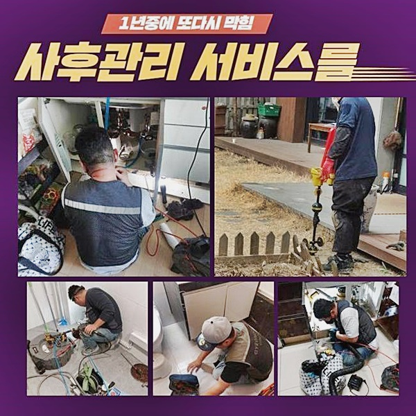
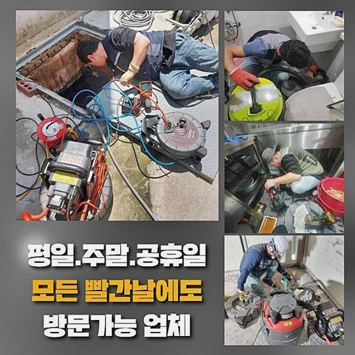
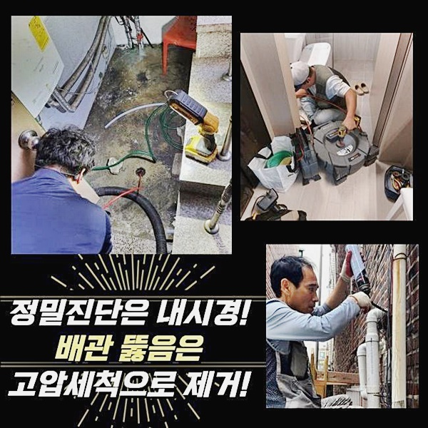
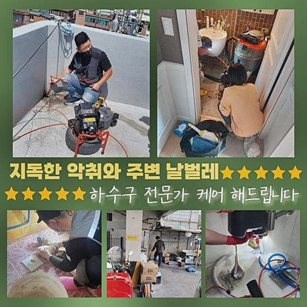
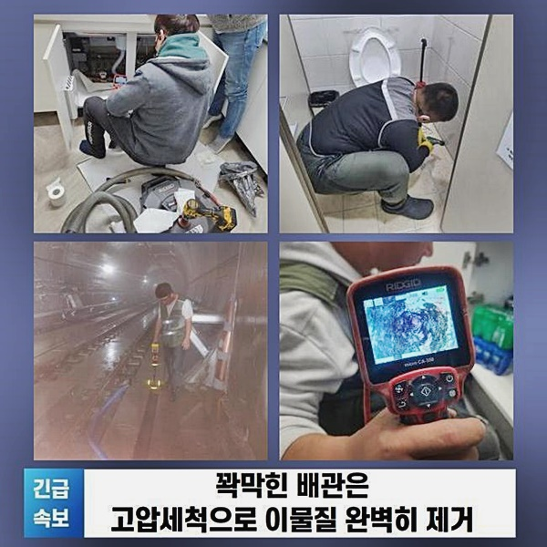
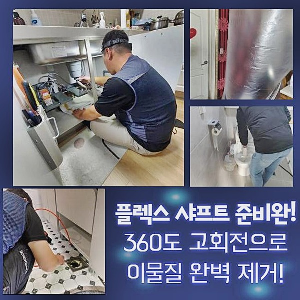

🏠 안양 박달2동화장실바닥막힘 맨홀역류 배관막힘누수업체
안양 하수구막힘 전문 시공 후기

📋 작업 개요
- 위치: 안양
- 서비스 유형: 하수구막힘, 배관막힘, 맨홀막힘, 누수수리, 역류해결, 뚫는업체, 배관청소, 고압세척
- 작업 일시: 2024. 9. 24. 10:19
- 업체명: 하수구수사대 (010-5615-2118)
🔍 문제 상황
안양 박달2동화장실바닥막힘 맨홀역류 배관막힘누수업체
일반적으로 하수관이 막혀 악취가 날때는 쉽사리 해결할수 있으나 건물의 공통 하수라인이 꽉 막힌 상황이라면 심각한 문제로 이어지기 때문에 고가의 전문적인 기기들을 불러와도 금방 고치질 못하는 상황이 대부분입니다
이러한 현장에선 저희업체처럼 다년간 경험을 갖추고 있는 전문진이 필요하게됩니다
최근에 방문하게 된 복합오피스텔 현장의 문제는 배관이 막힌 것으로 고층의 집에서 사용한 물로 저층의 상가나 가정에 역류로 인한 악취가 생길 원인들이 몰릴수도 있어요
고층의 세대에서 이용한 하수가 내려오면 다른 집이 막히게 되고 더욱 심할때는 오수가 범람하는 사태가 발생하게 되어 모든 세대의 일상생활이 어려워졌습니다
이처럼 빈번하게 발생되는 역류 사태들로 의뢰인께서 배수구 고압의 세척들을 원하고 계셨습니다
우리팀은 문제점을 꼼꼼하게 판단하고 전체적으로 생각하여 과정에 들어가기전에 예상되는 금액을 미리감치 말씀드립니다
알려주신 주소지로 가서 하수시스템을 확인해봤더니 제때에 청소작업이 되질 않아서 결국엔 막힌 상황으로 판단하였습니다

🔎 원인 분석
💡 전문가 진단: 정밀 진단 장비를 사용하여 슬러지의 고착 여부를 판명하고 타격/세척 작업을 실시했습니다.
가정집이나 보통 음식점에서 발생하게 되는 이물질을 흡입하는 석션기를 활용 해봤거나 쌓인 불순물을 뚫어내는 샤프트장비로 문제가 심하지 않을때 작업을 했었다면 중요한 하수관까지 막히는 일은 없었을 거예요
장기간 메인의 하수라인이 이물질로 가득찬 작업으로서서 말씀드린 기계만으로 작업에 착수하는게 불가능하다고 하셨습니다
하수구 점검작업을 해본 결과로는 오랜기간 막혀있던 상태로 하수관이 헐거운 상태로 된곳이 전체적으로 보여지고 있었어요
오염원과 기름침전물이 달라붙으면서 하수로에 부담을 주게되어 관자체가 헐거워지는 경우들이 있어, 이와같은 사태를 미리 막고자 스테인리스로 제작된 끈으로 완벽하게 접해두고 관의 안쪽을 씻는 과정을 착수하게 되었습니다
외벽의 배관에서 하수라인 내시경기기를 집어넣어 청소작업이 들어가야하는 부위를 확실한 체크하였습니다
안을 볼 수있는 장비들은 기름기로 인한 침전물과 노폐물이 관의 안쪽 벽면에 굳어있는 상태를 실시간으로 확실한 파악 가능하게합니다
고압을 이용하는 장비들은 폭발적인 압으로 분사하는 하수로 오염물질을 완벽히 없애며 배관에만 사용할 수있게 만든 장비들을 이용합니다
배수관이 여러각도였고 기기가 끝까지 가지 못하게 되는 일이 많아 시간이 지연되었고 세척을 하며 관에 달라붙은 오염물을 처리해야하는 작업으로 신경을 전체적으로 써야 했습니다

🔧 작업 과정
기름기로 인한 침전물로 배수라인이 꽉막힌 상황을 방지하려면 요리를 하고난후 묻어나오는 기름은 종이타올로 닦아내고 배수망을 통해 분리배출하는 일을 꼭 하셔야합니다
배수구 막힘현상으로 난감하신 고객께서는 확실한 전문적인 업체를 통해 문제를 처리할 방도를 찾으셔야합니다
저희팀은 전문적인 기술을 갖추고 신속하게 문제점을 처리해드릴 전문진으로서 믿고 맡겨주세요
하수관의 꽉 막힌 부분이 5~7M에 달하는 기다란 부분이라면 보다 더 조심스러운 접근기술이 매우 중요합니다
길이가 있는 배관은 입출구 부위와 가운데 지점에도 한번더 세척하는 과정이 중요하게 됩니다
노폐물이 세어나가지 않게 미연에 막아두고 장비들을 작동시켜 하수로 가운데쯤에 막혀버린 기름슬러지들과 불순물을 제거하고 완료했습니다
마지막 단계로 건물외벽의 하수로 고압의 세척작업을 진행하고 완벽하게 정리했습니다
건물벽에 위치해 있는 배수관이였기에 고압력의 수압힘을 활용해 완벽하게 세정작업들을 시행했습니다
고압의 세척기기는 지름 폭이 짧은 하수로를 강력하게 청소할수있는 장비들로 건물밖으로 노출이 된 하수라인에서 사용하게 됩니다
내부의 배관에서는 복잡한 구조물까지 손상을 끼치는 경우가 있어 건물외부 하수라인 위치에서 사용법이 권유됩니다
안을 볼 수 있는 기계로 점검한후 노즐선을 해당하는 지점에 맞춰넣어 불순물이 가득한 지점들을 클리어하게 제거했습니다
작업을 진행하면서 하수시스템의 정상가동을 기기로 확인할수 있었고 강력한 수압으로 안쪽에 붙어있던 불순물이 오수들과 같이 나오는 모습을 고객님과 함께 확인했습니다
기름슬러지들과 기타 오염원을 청소한후 재검을 통해 실제로 보면서 세정과정이 완벽하게 된건지 정체되는 부분이 없는지 마무리검사는 중요한 최종중요한 중요한 중요한 필수중요한 필수적인 절차입니다


✅ 작업 완료
위와같은 과정은 건물내외부의 배관에 고도의 압력으로 세척하는 과정을 완료하고 나서도 건물의 모든 라인으로 설치된 하수로를 포함해 시멘트맨홀로 쭉 이어진 메인관로까지 물샐틈없이 들여다보는 필수필수적인 절차입니다
저희팀이 해결완료한 장소는 모든 층에 설비 되어진 가지배관들로부터 맨홀지점으로 내려오는 메인 하수도까지 해결을 완료했습니다
혹시 고객님께서도 이런 배수구 막힘 문제들이 반복된다면 가벼이 생각말고 전문진을 통하여 물이 내려가지 않는 문제를 찾아보고 정확하게 하수관 세척 진행 방법을 지금 알아보세요!
저희 전문진은 항상 의뢰인분의 편안한 주거환경을 지키고자 최선을 다하겠습니다 하수관 세척시 예상비용이 궁금하시면 언제든 연락바랍니다




⚠️ 베란다 누수 및 방수 관리 방법
- ✅ 비가 많이 올 때 창틀 주변이나 아래층 천장에 얼룩이 생기는지 정기적으로 확인해 보세요.
- ✅ 우수관 주변 실리콘 마감이 들뜨거나 깨진 틈새가 있는지 손상 여부를 수시로 체크하세요.
- ✅ 베란다 바닥 타일의 줄눈(메지)이 소실되면 그 틈으로 물이 침투하여 누수가 유발됩니다.
- ✅ 누수 의심 증상 발견 시 방치하면 아래층 손실이 커지므로 즉시 전문가의 진단을 받으십시오.
💡 핵심 정리
- 확실한 장비 작업(내시경 점검 및 샤프트 스케일링)으로 원인을 뿌리 뽑습니다.
- 작업 후 1년 이내에 동일한 부위 재발 시 100% 무상 A/S 서비스를 보장합니다.
- 서울 · 경기 · 인천 전 지역에 24시간 언제든 긴급 출동할 수 있도록 항시 대기 중입니다.
❓ 자주 묻는 질문 (FAQ)
🚨 안양 하수구막힘 문제로 고민이신가요?
정확한 원인 진단과 확실한 시공으로 재발 없는 해결을 약속드립니다.
24시간 긴급 출동 | 서울 · 경기 · 인천 전지역 | 1년 내 재발 시 무상 A/S